<title>Useful Bot Logo</title>
<meta charset="utf-8">
<link rel="icon" href="favicon/favicon.svg" type="image/svg+xml">
<link rel="preconnect" href="https://fonts.googleapis.com">
<link rel="preconnect" href="https://fonts.gstatic.com" crossorigin>
<link rel="stylesheet" href="https://fonts.googleapis.com/css2?family=Inter:wght@400;500;600&family=JetBrains+Mono:wght@400;500&display=swap">
<style>
  :root {
    --ground: #F3F3F1;
    --panel: #FFFFFF;
    --ink: #141413;
    --muted: #5E5E5A;
    --rule: #DEDEDA;
    --black: #000000;
    --tongue: #FF8FA3;
    --good: #1F7A4D;
    --bad: #B42318;
    --checker: #E4E4E0;
  }
  @media (prefers-color-scheme: dark) {
    :root:not([data-theme="light"]) {
      color-scheme: dark;
      --ground: #0E0E0D;
      --panel: #1A1A19;
      --ink: #F2F2EF;
      --muted: #A3A39E;
      --rule: #2E2E2C;
      --good: #5CC98E;
      --bad: #F2877D;
      --checker: #2A2A28;
    }
  }
  :root[data-theme="dark"] {
    color-scheme: dark;
    --ground: #0E0E0D;
    --panel: #1A1A19;
    --ink: #F2F2EF;
    --muted: #A3A39E;
    --rule: #2E2E2C;
    --good: #5CC98E;
    --bad: #F2877D;
    --checker: #2A2A28;
  }
  * { box-sizing: border-box; }
  body {
    margin: 0;
    background: var(--ground);
    color: var(--ink);
    font: 15px/1.55 Inter, system-ui, -apple-system, "Segoe UI", sans-serif;
    padding-inline: 16px;
  }
  main { max-width: 1120px; margin: 0 auto; padding-block: 40px 88px; display: grid; gap: 72px; }
  h1, h2, h3 { font-weight: 600; margin: 0; text-wrap: balance; }
  h1 { font-size: clamp(32px, 5vw, 52px); letter-spacing: -0.035em; line-height: 1.05; }
  h2 { font-size: 22px; letter-spacing: -0.02em; }
  h3 { font-size: 14px; }
  p { margin: 0; max-width: 64ch; }
  .muted { color: var(--muted); }
  .mono { font-family: "JetBrains Mono", ui-monospace, SFMono-Regular, Menlo, monospace; font-size: 12px; font-variant-numeric: tabular-nums; }
  .label { font-size: 11px; text-transform: uppercase; letter-spacing: 0.08em; color: var(--muted); font-weight: 500; }
  section { display: grid; gap: 24px; }
  .head { display: grid; gap: 8px; }
  img { display: block; max-width: 100%; }

  /* Hero */
  .hero { display: grid; grid-template-columns: minmax(0, 1fr) minmax(0, 1.1fr); gap: 40px; align-items: center; }
  .hero .copy { display: grid; gap: 20px; }
  .hero .stage { background: var(--black); border-radius: 28px; aspect-ratio: 1; display: grid; place-items: center; max-width: 100%; }
  .hero .stage img { width: 100%; height: auto; }
  .specs { display: grid; grid-template-columns: repeat(3, minmax(0, 1fr)); gap: 16px; border-top: 1px solid var(--rule); padding-top: 16px; }
  .specs div { display: grid; gap: 2px; }
  .swatches { display: flex; flex-wrap: wrap; gap: 12px; }
  .swatch { display: flex; align-items: center; gap: 8px; }
  .chip { width: 20px; height: 20px; border-radius: 6px; border: 1px solid var(--rule); }

  /* Masters */
  .masters { display: grid; grid-template-columns: repeat(3, minmax(0, 1fr)); gap: 20px; }
  figure { margin: 0; display: grid; gap: 10px; min-width: 0; }
  figcaption { display: grid; gap: 2px; font-size: 13px; }
  .tile { aspect-ratio: 1; max-width: 100%; border-radius: 16px; display: grid; place-items: center; overflow: hidden; border: 1px solid var(--rule); }
  .tile img { width: 100%; height: auto; }
  .on-black { background: var(--black); border-color: var(--black); }
  .on-checker { background-color: var(--panel); background-image: conic-gradient(var(--checker) 25%, transparent 0 50%, var(--checker) 0 75%, transparent 0); background-size: 20px 20px; }

  /* App icon ladder */
  .ladder { background: var(--panel); border: 1px solid var(--rule); border-radius: 20px; padding: 28px; display: flex; flex-wrap: wrap; align-items: flex-end; gap: 28px 36px; }
  .ladder figure { justify-items: center; text-align: center; }
  .ladder figcaption { justify-items: center; }
  .i1024 { width: 256px; } .i512 { width: 128px; } .i128 { width: 64px; } .i32 { width: 32px; } .i16 { width: 16px; }
  .dock { display: flex; gap: 10px; align-items: center; padding: 10px 14px; border-radius: 22px; background: color-mix(in srgb, var(--ink) 8%, transparent); }
  .dock span { width: 48px; height: 48px; border-radius: 12px; background: color-mix(in srgb, var(--ink) 16%, transparent); }
  .dock img { width: 56px; height: 56px; }

  /* Favicons */
  .tabs { display: grid; gap: 12px; }
  .tab { display: flex; align-items: center; gap: 10px; background: var(--panel); border: 1px solid var(--rule); border-radius: 10px 10px 0 0; padding: 10px 14px; max-width: 340px; font-size: 13px; }
  .tab img { width: 16px; height: 16px; }
  .zoom { display: flex; flex-wrap: wrap; gap: 24px; align-items: flex-end; }
  .zoom img { image-rendering: pixelated; }
  .z16 { width: 128px; height: 128px; } .z32 { width: 128px; height: 128px; }
  .z180 { width: 90px; height: 90px; border-radius: 20px; }

  /* Lockups */
  .lockups { display: grid; grid-template-columns: minmax(0, 2fr) minmax(0, 1fr); gap: 20px; }
  .lockup { background: var(--black); border-radius: 16px; padding: 36px; display: grid; place-items: center; }
  .lockup img { width: 100%; height: auto; }
  .lockup.stack img { width: 72%; }
  .navbar { background: var(--black); border-radius: 12px; padding: 14px 20px; display: flex; align-items: center; justify-content: space-between; gap: 16px; color: #FFFFFF; font-size: 13px; }
  .navbar img { width: 168px; height: auto; }
  .navbar nav { display: flex; gap: 18px; opacity: .7; }
  .wordmark { background: var(--black); border-radius: 12px; padding: 20px 24px; }
  .wordmark img { width: 200px; }

  /* PWA */
  .pwa { display: flex; flex-wrap: wrap; gap: 28px; align-items: center; }
  .mask { position: relative; width: 192px; height: 192px; max-width: 100%; }
  .mask img { width: 100%; height: 100%; }
  .mask.circle img { border-radius: 50%; }
  .mask.squircle img { border-radius: 26%; }
  .mask .safe { position: absolute; inset: 10%; border-radius: 50%; border: 2px dashed var(--tongue); pointer-events: none; }

  /* Social */
  .social { display: grid; grid-template-columns: minmax(0, 2fr) minmax(0, 1fr); gap: 20px; align-items: start; }
  .social img { border-radius: 12px; width: 100%; height: auto; border: 1px solid var(--rule); }
  .social .avatar img { border-radius: 50%; }

  /* Do and don't */
  .rules { display: grid; grid-template-columns: repeat(4, minmax(0, 1fr)); gap: 20px; }
  .verdict { font-size: 12px; font-weight: 600; letter-spacing: 0.04em; text-transform: uppercase; }
  .do .verdict { color: var(--good); }
  .dont .verdict { color: var(--bad); }
  .dont .tile { border-color: var(--bad); }
  .stretch img { transform: scaleX(1.35); }
  .rotate img { transform: rotate(-18deg); }
  .crop img { transform: scale(1.9); }
  .white-bg { background: #FFFFFF; }

  code { font-family: "JetBrains Mono", ui-monospace, Menlo, monospace; font-size: 12.5px; background: color-mix(in srgb, var(--ink) 7%, transparent); padding: 1px 5px; border-radius: 4px; overflow-wrap: anywhere; }

  @media (max-width: 820px) {
    .hero, .lockups, .social { grid-template-columns: minmax(0, 1fr); }
    .rules { grid-template-columns: repeat(2, minmax(0, 1fr)); }
  }
  @media (max-width: 520px) {
    .masters { grid-template-columns: minmax(0, 1fr); }
    .specs { grid-template-columns: minmax(0, 1fr); }
    .i1024 { width: 200px; }
    .navbar nav { display: none; }
  }
</style>

<main>
  <section class="hero" aria-labelledby="title">
    <div class="copy">
      <span class="label">Brand system, September 2026</span>
      <h1 id="title">The head is the logo.</h1>
      <p class="muted">Useful Bot's logo is the bot's own face: the white circle head with black glasses, eyes and a smile, on black. It replaces the full-body mascot on every surface. The app icon, favicons, social images and lockups all come from three hand-written SVG masters.</p>
      <div class="specs">
        <div><span class="label">Head</span><span class="mono">62.2% of the tile</span></div>
        <div><span class="label">Circle</span><span class="mono">r 352, face units</span></div>
        <div><span class="label">macOS tile</span><span class="mono">824 at (100, 100)</span></div>
      </div>
      <div class="swatches">
        <div class="swatch"><span class="chip" style="background:#000000"></span><span class="mono">#000000</span></div>
        <div class="swatch"><span class="chip" style="background:#FFFFFF"></span><span class="mono">#FFFFFF</span></div>
        <div class="swatch"><span class="chip" style="background:#141413"></span><span class="mono">#141413</span></div>
        <div class="swatch"><span class="chip" style="background:#FF8FA3"></span><span class="mono">#FF8FA3</span></div>
      </div>
    </div>
    <div class="stage">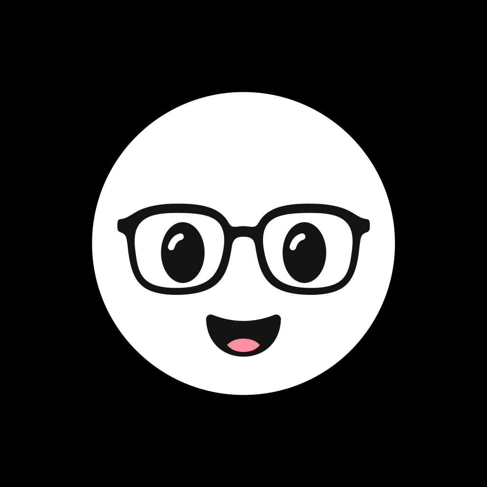</div>
  </section>

  <section aria-labelledby="masters">
    <div class="head">
      <h2 id="masters">Three masters</h2>
      <p class="muted">Same face, same geometry, three placements. The head sits where the first-run Welcome tile puts it: a 76 pt face box in a 112 pt tile.</p>
    </div>
    <div class="masters">
      <figure>
        <div class="tile on-checker">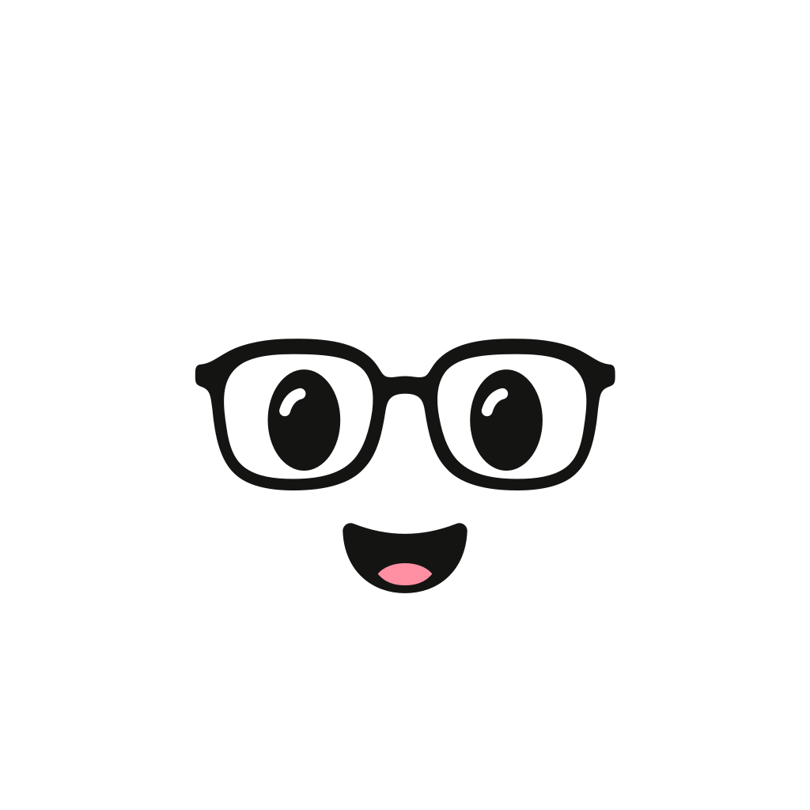</div>
        <figcaption><h3>Mark</h3><span class="mono muted">svg/useful-bot-mark.svg</span><span class="muted">Transparent. For your own black surface.</span></figcaption>
      </figure>
      <figure>
        <div class="tile on-black"></div>
        <figcaption><h3>Logo</h3><span class="mono muted">svg/useful-bot-logo.svg</span><span class="muted">The default. Brings its own black.</span></figcaption>
      </figure>
      <figure>
        <div class="tile on-checker">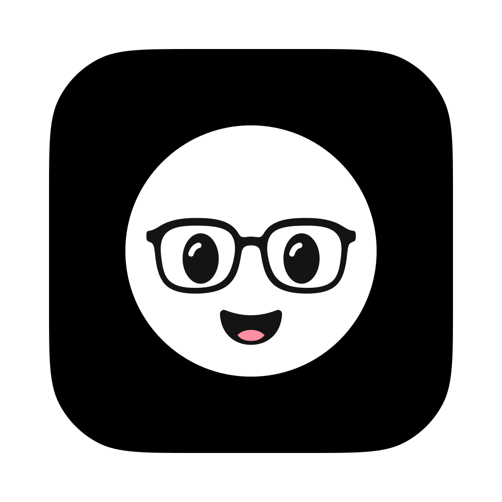</div>
        <figcaption><h3>macOS app icon</h3><span class="mono muted">svg/useful-bot-app-icon-macos.svg</span><span class="muted">Apple's grid with a continuous corner.</span></figcaption>
      </figure>
    </div>
  </section>

  <section aria-labelledby="inverse">
    <div class="head">
      <h2 id="inverse">Inverse, for white surfaces</h2>
      <p class="muted">Black head on white, for documents, light pages and print. Every colour flips so the glasses and eyes still read. White on black stays the default.</p>
    </div>
    <div class="masters">
      <figure>
        <div class="tile white-bg">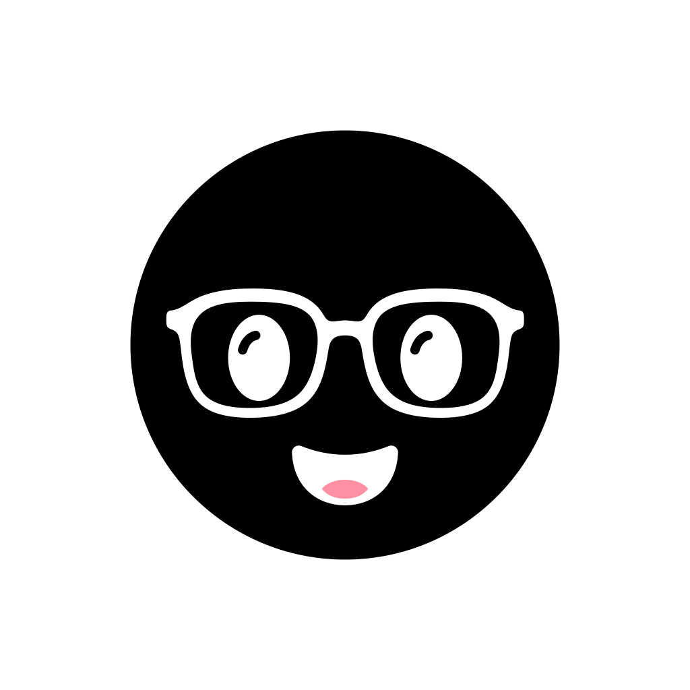</div>
        <figcaption><h3>Inverse logo</h3><span class="mono muted">svg/useful-bot-logo-inverse.svg</span></figcaption>
      </figure>
      <figure>
        <div class="tile on-checker">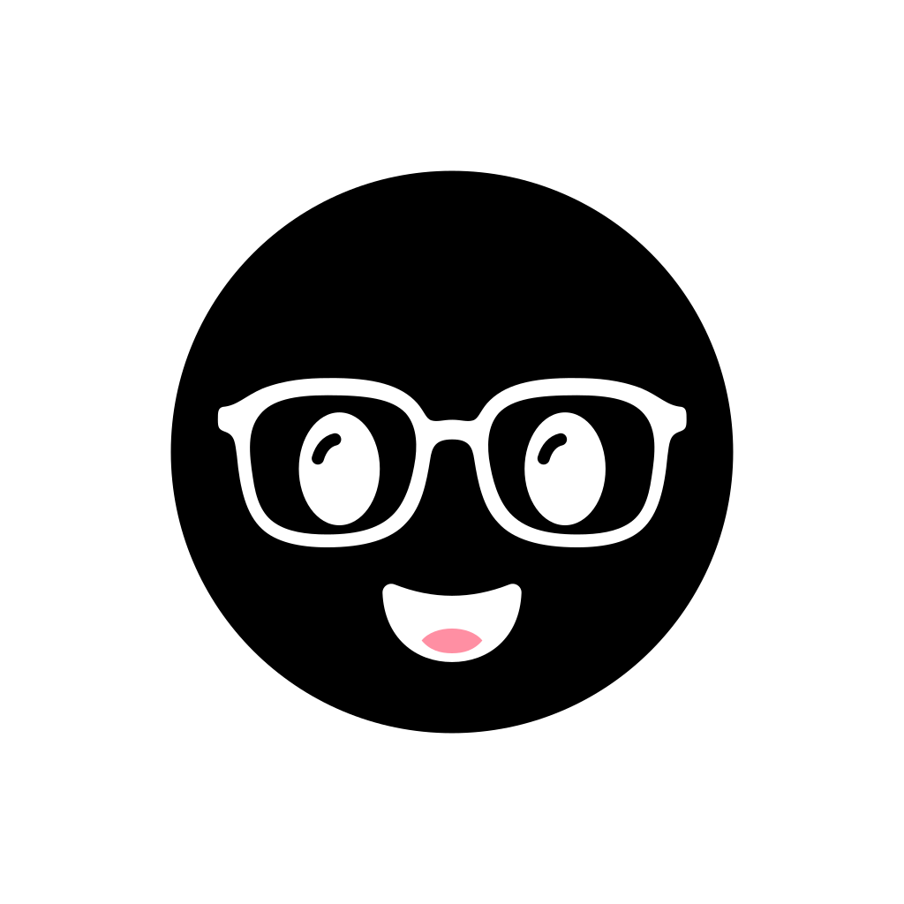</div>
        <figcaption><h3>Inverse mark</h3><span class="mono muted">svg/useful-bot-mark-inverse.svg</span></figcaption>
      </figure>
      <figure>
        <div class="tile white-bg"></div>
        <figcaption><h3>At 32 px</h3><span class="mono muted">png/white/useful-bot-32.png</span></figcaption>
      </figure>
    </div>
    <div class="lockups">
      <div class="lockup white-bg" style="border:1px solid var(--rule)">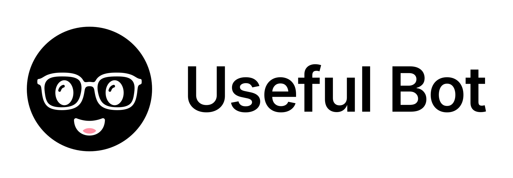</div>
      <div class="lockup stack white-bg" style="border:1px solid var(--rule)">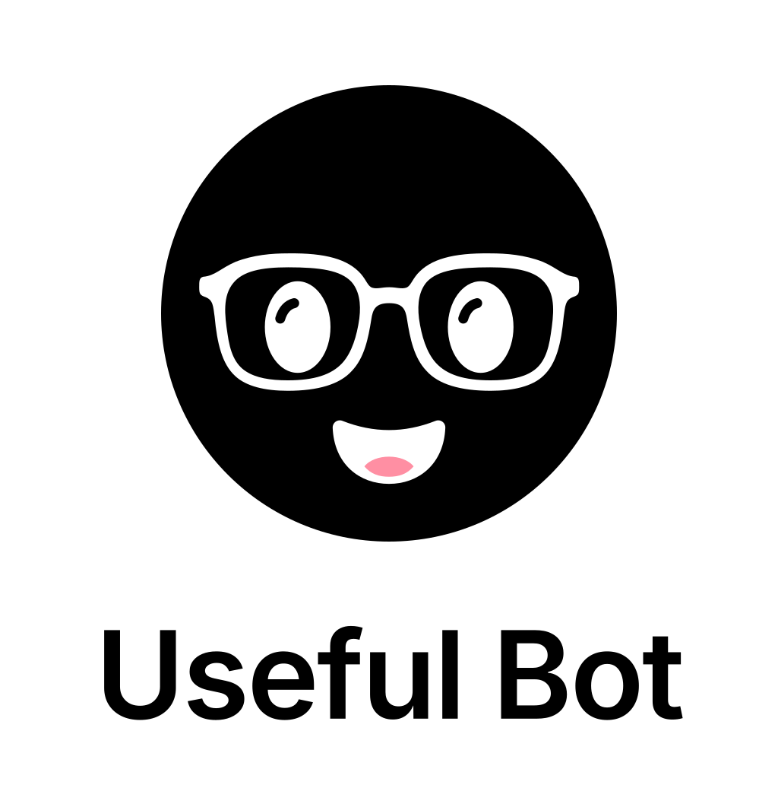</div>
    </div>
  </section>

  <section aria-labelledby="appicon">
    <div class="head">
      <h2 id="appicon">App icon</h2>
      <p class="muted">Rendered from the vector at every size in the ICNS. Nothing is scaled down from a bitmap.</p>
    </div>
    <div class="ladder">
      <figure><figcaption><span class="mono">1024</span></figcaption></figure>
      <figure>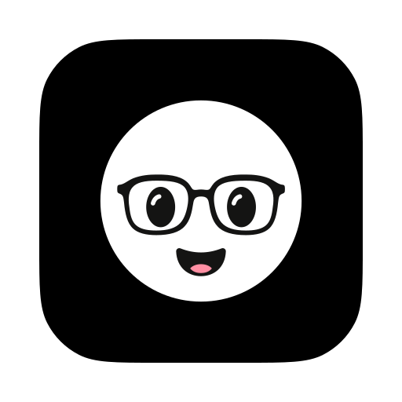<figcaption><span class="mono">512</span></figcaption></figure>
      <figure>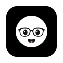<figcaption><span class="mono">128</span></figcaption></figure>
      <figure><figcaption><span class="mono">32</span></figcaption></figure>
      <figure><figcaption><span class="mono">16</span></figcaption></figure>
      <figure>
        <div class="dock" aria-hidden="true"><span></span>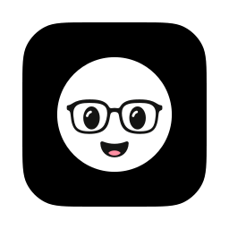<span></span></div>
        <figcaption><span class="muted">In the Dock</span></figcaption>
      </figure>
    </div>
  </section>

  <section aria-labelledby="favicons">
    <div class="head">
      <h2 id="favicons">Favicons</h2>
      <p class="muted">Tabs are tiny, so the favicon's head fills 84% of its square. The ICO carries 16, 32 and 48 px.</p>
    </div>
    <div class="tabs">
      <div class="tab">Useful Bot</div>
    </div>
    <div class="zoom">
      <figure><figcaption><span class="mono">16 px, 8x</span></figcaption></figure>
      <figure><figcaption><span class="mono">32 px, 4x</span></figcaption></figure>
      <figure>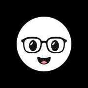<figcaption><span class="mono">180 touch icon</span></figcaption></figure>
    </div>
  </section>

  <section aria-labelledby="lockups">
    <div class="head">
      <h2 id="lockups">Wordmark and lockups</h2>
      <p class="muted">Inter Semibold, outlined, tracked -0.018em. The name's cap height is centred on the head. White type, so always on black.</p>
    </div>
    <div class="lockups">
      <div class="lockup"></div>
      <div class="lockup stack"></div>
    </div>
    <div class="navbar">
      
      <nav aria-hidden="true"><span>Download</span><span>Privacy</span></nav>
    </div>
    <div class="wordmark"></div>
  </section>

  <section aria-labelledby="pwa">
    <div class="head">
      <h2 id="pwa">Maskable icon</h2>
      <p class="muted">The dashed ring is the W3C safe circle, 40% of the width. The head's radius is 31%, so any launcher mask keeps the whole face.</p>
    </div>
    <div class="pwa">
      <figure><div class="mask">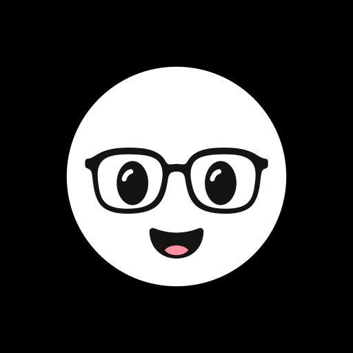<span class="safe"></span></div><figcaption><span class="mono">Full bleed</span></figcaption></figure>
      <figure><div class="mask circle"></div><figcaption><span class="mono">Circle mask</span></figcaption></figure>
      <figure><div class="mask squircle"></div><figcaption><span class="mono">Rounded mask</span></figcaption></figure>
    </div>
  </section>

  <section aria-labelledby="social">
    <div class="head">
      <h2 id="social">Social</h2>
      <p class="muted">Link previews pair the head with the name. Profile images are the logo, and a circle crop keeps the head whole.</p>
    </div>
    <div class="social">
      <figure>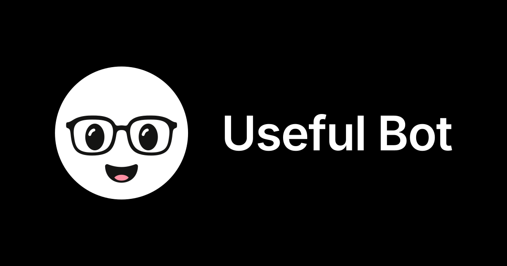<figcaption><span class="mono">og-image.png, 1200 x 630</span></figcaption></figure>
      <figure class="avatar"><figcaption><span class="mono">avatar-1024.png, cropped</span></figcaption></figure>
    </div>
  </section>

  <section aria-labelledby="rules">
    <div class="head">
      <h2 id="rules">Do and don't</h2>
      <p class="muted">The head is always the original white face on black. Colored heads are for bots, not the brand.</p>
    </div>
    <div class="rules">
      <figure class="do"><div class="tile on-black"></div><figcaption><span class="verdict">Do</span><span>White head on black, with its clear space.</span></figcaption></figure>
      <figure class="do"><div class="tile white-bg"></div><figcaption><span class="verdict">Do</span><span>On white, use the inverse logo, or the icon, which brings its own black.</span></figcaption></figure>
      <figure class="dont"><div class="tile white-bg"></div><figcaption><span class="verdict">Don't</span><span>Put the white mark on white. Use the inverse set.</span></figcaption></figure>
      <figure class="dont"><div class="tile on-black">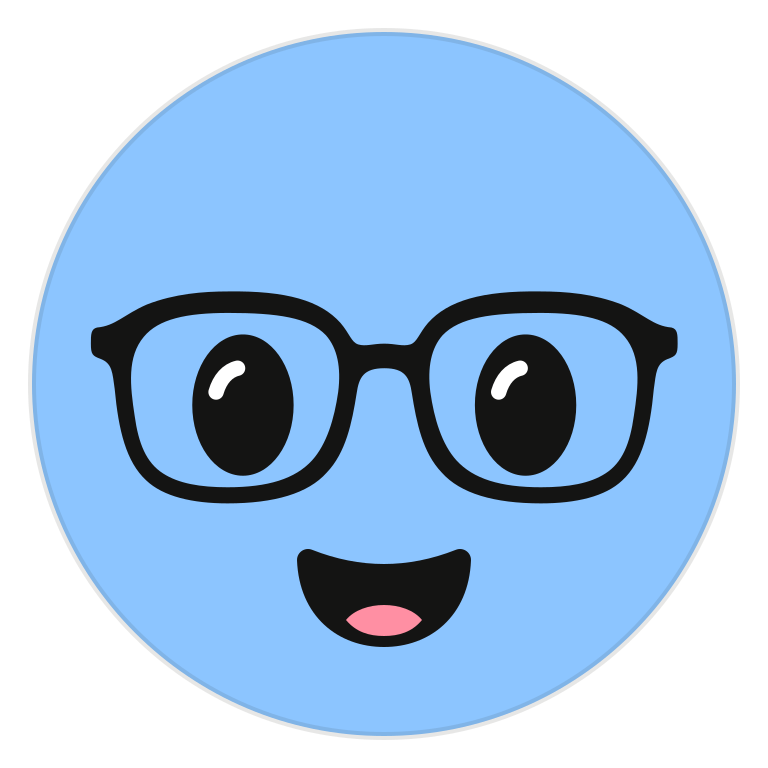</div><figcaption><span class="verdict">Don't</span><span>Use a bot color as the logo.</span></figcaption></figure>
      <figure class="dont stretch"><div class="tile on-black"></div><figcaption><span class="verdict">Don't</span><span>Stretch or squash the circle.</span></figcaption></figure>
      <figure class="dont rotate"><div class="tile on-black"></div><figcaption><span class="verdict">Don't</span><span>Tilt the head.</span></figcaption></figure>
      <figure class="dont crop"><div class="tile on-black"></div><figcaption><span class="verdict">Don't</span><span>Crop into the face.</span></figcaption></figure>
      <figure class="do"><div class="tile on-black"></div><figcaption><span class="verdict">Do</span><span>Float and blink, and nothing else. It stops for Reduce Motion.</span></figcaption></figure>
    </div>
  </section>

  <section aria-labelledby="files">
    <div class="head">
      <h2 id="files">Where things live</h2>
      <p class="muted">Edit the masters in <code>brand/source/</code>, then run <code>npm run brand:build</code>. Never edit a generated file. The app reads <code>png/mark/useful-bot-128.png</code>, <code>png/black/useful-bot-256.png</code>, <code>svg/useful-bot-wordmark.svg</code> and <code>app/macos/UsefulBot.icns</code>.</p>
    </div>
  </section>
</main>
